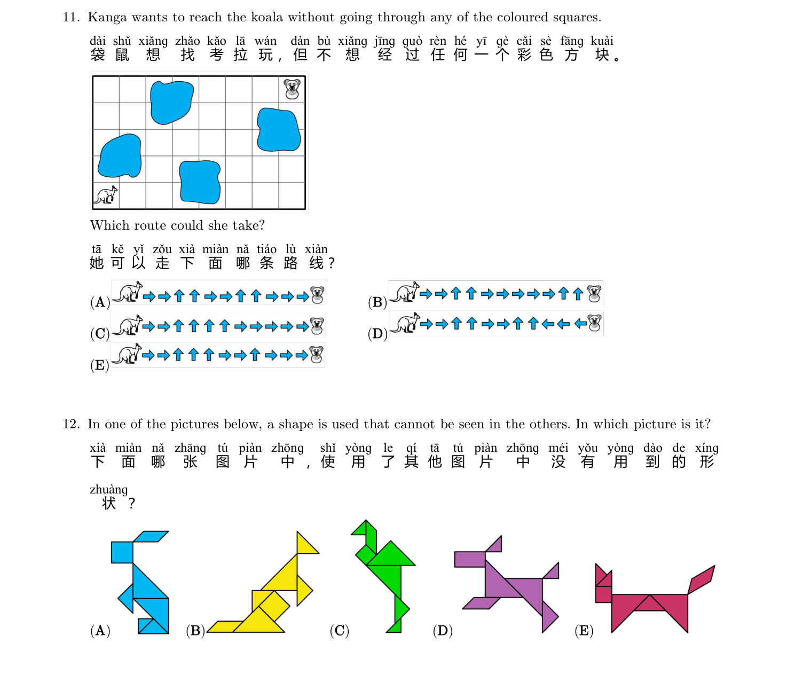
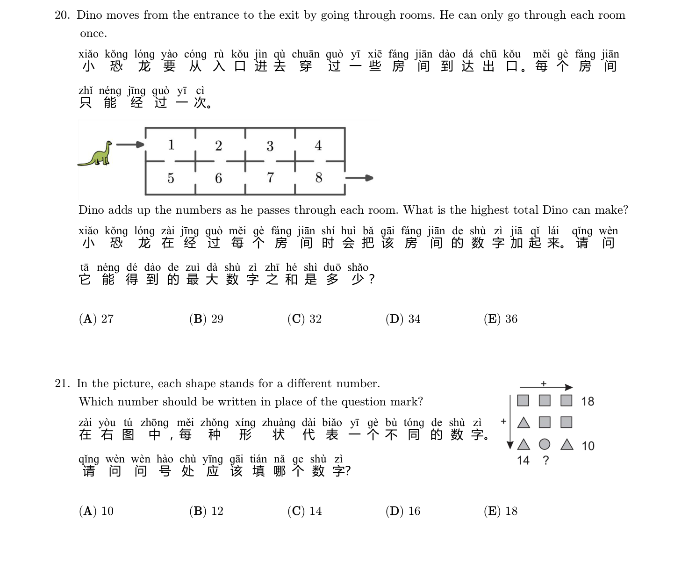
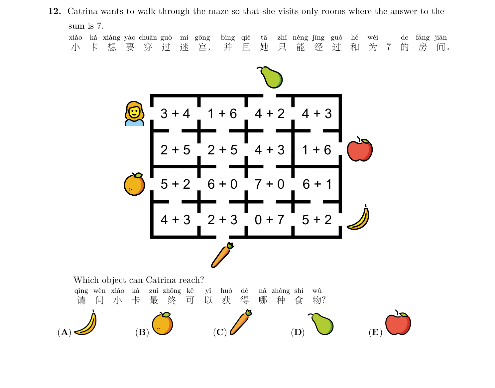

学会辨认方向，数出最短路径，在迷宫里找到出口！成为最棒的小导航家 🧭
从 🟢 起点 只能向右或向下走，到达每个格子的路径数 = 上方路径数 + 左方路径数。点击任意格子设为终点！

提示：图中有彩色方块，观察哪条路线能全程避开所有彩色格子。选项路线（A）~（E）已在图中画出。
提示：小恐龙从入口到出口，每个房间只能经过一次，把沿途房间的数字加起来，最大能得多少？
提示：小卡特只能经过两数之和等于 7 的房间，看看能走到哪个食物处。选项（A）~（E）是不同食物。